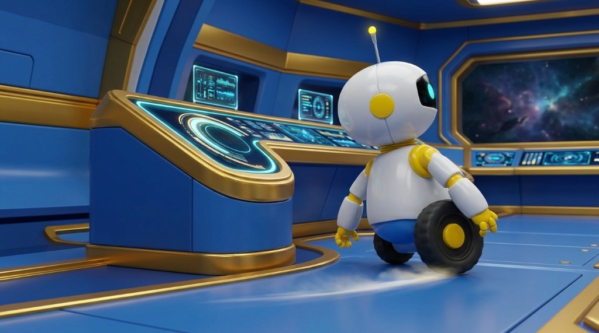
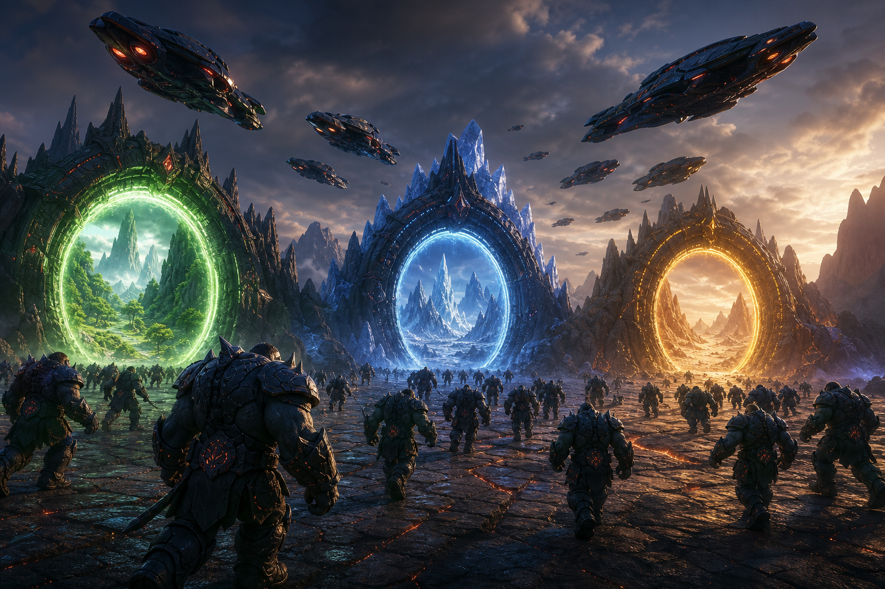

Locked S.P.A.R.K. reference (shape & size)
Locked / approved

This is the approved robot proportion lock for all future Spark shots.
OWNER APPROVED 2026-07-15 — storyboard locked for production
About 60 seconds. Owner approval pack: photo + description + dialogue for every shot. No video credits until you approve.
Locked / approved

This is the approved robot proportion lock for all future Spark shots.
OWNER APPROVED

Wonder first, then urgent discovery. Extreme close-up of the Astral Realm Stone; nine world symbols illuminate.
Camera: Slow stable push toward the Stone.
Nova system: Priority alert. Astral Realm Stone signal detected.
Caption: PRIORITY ALERT · ASTRAL REALM STONE SIGNAL DETECTED
Confirm Stone matches your approved reference.
Owner-chosen Shot 2 — locked

THINNED legion: Kalhor still front as lieutenant. Army behind him with clearer spacing so characters read as distinct (not a cluttered mash). Clubs/maces/spears/hammers only—NO swords. Conquer-a-planet energy; kid-safe.
Camera: Fast ground-level track into low-angle villain composition.
(No spoken line — marching / command gesture beat)
Caption: (Silent action beat)
Please confirm: Kalhor front; legion still feels big but spaced enough to see individual soldiers; no swords; kid-safe conquest vibe.
OWNER APPROVED

Kalhor medium close-up. Opens fist toward nine-world hologram with controlled certainty.
Camera: Very slow push-in. No Dutch angle.
Lieutenant Kalhor: Find the Stone. Search every world. Nothing will stand between my Master and absolute control.
Caption: “Find the Stone. Search every world.” — Lieutenant Kalhor
Confirm face/armor match approved Kalhor. Voice = Lieutenant-Kalhor custom.
OWNER APPROVED

Soldiers and carriers deploy into three glowing world portals (green / ice / desert). No combat.
Camera: One flowing left-to-right move.
(No spoken line — deployment montage)
Caption: (Silent action beat)
Confirm deployment reads as large-scale search, not battle gore.
Carter lock OK

Bright command deck. Locked Carter look A (high bun) centered beneath Stone display as systems wake.
Camera: Descending crane to Carter eye level.
(No spoken line yet — music resolves into command theme; Carter speech begins in Shot 6)
Caption: (Silent arrival beat into briefing)
Carter-Exact look A approved. Voice for later lines = Tasha.
Carter lock OK

Locked Carter look B (braids/ponytail) briefs the cadet. Threat map becomes communication + navigation training paths.
Camera: Two deliberate cuts with gentle pushes.
Commander Carter: The Allen Girls have discovered the Astral Realm Stone. In the right hands, it can save all nine worlds. In the wrong hands, it can destroy them.
Commander Carter: Kalhor and his armies are already searching. You and the Allen Girls can help protect the Stone—but first, we need to learn how you solve different kinds of challenges. S.P.A.R.K. will guide your Signal Clarity Scan.
Caption: The Astral Realm Stone can save—or destroy—all nine worlds. / Help the Allen Girls protect the Stone. Complete the Signal Clarity Scan to receive your mission path.
Carter-Exact look B approved. Double-check Stone shape separately.
SPARK-Exact rewrite — review facing + proportions

S.P.A.R.K. speeds around a console, brakes in a playful half-turn, projects two system icons.
Camera: Wheel-height tracking into centered medium shot.
(No spoken line — entrance then chirps; speech in Shot 8)
Caption: (Silent entrance beat)
IMPORTANT: Compare to SPARK-Exact. Older frame may need redo before video.
SPARK-Exact rewrite — review facing + proportions

S.P.A.R.K. beside readable scan card with communication and navigation icons and Start Mission control.
Camera: Locked camera for reading comfort.
S.P.A.R.K.: Cadet, I’ll check two systems: communication and navigation. This is not pass or fail, and it is not a race. Your answers help us choose the right training for each subject. Ready? Let’s make the data sparkle.
Caption: I’ll check communication and navigation systems. This is not pass or fail, and it is not a race.
IMPORTANT: Compare to SPARK-Exact before approving video. Voice = Spark custom.